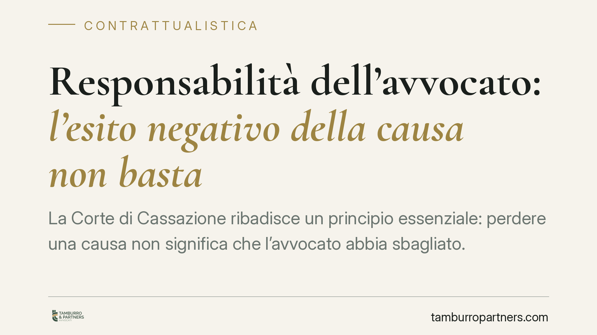

Responsabilità dell'avvocato: l'esito negativo della causa non basta
La Corte di Cassazione ribadisce un principio essenziale: perdere una causa non significa che l'avvocato abbia sbagliato. Per ottenere il risarcimento, il cliente deve dimostrare che, con una difesa corretta, l'esito sarebbe stato favorevole. Un chiarimento che tutela la categoria professionale e, al tempo stesso, orienta il cliente su cosa debba effettivamente provare in giudizio.

Il principio affermato
La Corte di Cassazione, Sezione Terza civile, è tornata su un tema ricorrente nel contenzioso tra avvocati e clienti: quando l'insuccesso di una causa si traduce in responsabilità professionale.
La risposta è netta. L'esito sfavorevole del giudizio non prova, di per sé, la colpa del difensore. Il cliente che chiede il risarcimento deve dimostrare qualcosa di più: che una condotta professionale diversa e corretta avrebbe, con ragionevole probabilità, condotto alla vittoria.
*(Nota redazionale: il numero e l'anno esatti dell'ordinanza vanno verificati sulla banca dati ufficiale prima della pubblicazione definitiva.)*
L'obbligazione dell'avvocato è di mezzi, non di risultato
Il punto di partenza è la natura della prestazione. L'avvocato non si obbliga a far vincere la causa, ma a difendere il cliente con la diligenza richiesta dalla professione.
Il parametro è l'art. 1176, comma 2, del Codice civile: il professionista risponde secondo la diligenza qualificata, cioè quella del buon operatore del settore, più rigorosa di quella richiesta all'uomo comune. Su questo metro si misura la correttezza della sua attività.
L'art. 2236 del Codice civile limita la responsabilità alla sola colpa grave, ma opera in un ambito ristretto: le prestazioni che implicano la soluzione di problemi tecnici di speciale difficoltà. Fuori da queste ipotesi, l'avvocato risponde anche per colpa lieve. La giurisprudenza recente applica questa norma in modo restrittivo: non è uno scudo generale, ma un'eccezione circoscritta.
Il giudizio prognostico: una verifica a ritroso
Il cuore della decisione sta nel cosiddetto giudizio prognostico. Si tratta di una verifica a ritroso: il giudice ricostruisce quale sarebbe stato l'esito della causa se l'avvocato avesse agito correttamente.
In pratica, si celebra un processo ipotetico. Se, anche con una difesa impeccabile, il cliente avrebbe comunque perso, non c'è nesso tra l'errore e il danno: manca il pregiudizio risarcibile. Se invece la condotta corretta avrebbe presumibilmente portato alla vittoria, allora l'errore ha prodotto una perdita concreta.
Il danno, dunque, non coincide con la causa persa. Coincide con la perdita della ragionevole probabilità di vincere, che l'errore professionale ha vanificato.
L'onere della prova grava sul cliente
Qui entra in gioco l'art. 2697 del Codice civile: chi fa valere un diritto deve provarne i fatti costitutivi.
Il cliente che agisce contro il proprio avvocato deve quindi dimostrare tre elementi: l'errore professionale, il danno subito e il nesso causale tra i due. In concreto, deve provare che la difesa alternativa esisteva, era praticabile e avrebbe, con ragionevole probabilità, modificato l'esito.
Non basta lamentare l'insuccesso. Occorre ricostruire, con elementi concreti, lo scenario favorevole mancato.
Cosa cambia per il cliente e per il professionista
Per il cliente, la pronuncia alza l'asticella probatoria. Chi intende agire contro il proprio avvocato deve presentarsi con una ricostruzione tecnica solida, non con il solo dato della sconfitta.
Per l'avvocato, il principio conferma che l'attività va valutata ex ante, sulla base delle scelte ragionevoli al momento in cui sono state compiute, e non con il senno di poi. L'errore deve essere dimostrato, non presunto dall'esito.
Cosa fare in concreto
- Documentare le scelte difensive. Conservare per iscritto le strategie adottate, le alternative valutate e le ragioni delle decisioni assunte.
- Informare il cliente sui rischi. Rendere chiari, fin dall'inizio, i margini di incertezza della causa e le possibili conseguenze sfavorevoli.
- Valutare la fondatezza della pretesa risarcitoria. Prima di agire contro un professionista, è opportuna un'analisi preliminare della sostenibilità del giudizio prognostico.
- Raccogliere elementi tecnici. Per fondare la domanda, è necessario individuare quale difesa alternativa sarebbe stata vincente e con quali argomenti.
- Rispettare i termini di prescrizione. Verificare per tempo la decorrenza del termine per l'azione di responsabilità professionale.
Disclaimer
Contributo informativo a cura di Tamburro & Partners Avvocati – Avv. Giuseppe Tamburro. Non costituisce parere legale.
Ogni contratto ha il suo equilibrio.
Se vuoi una revisione delle clausole o una redazione su misura, scrivi allo studio. Ti rispondiamo entro un giorno lavorativo.